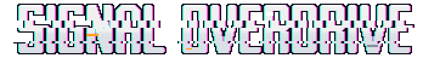
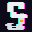
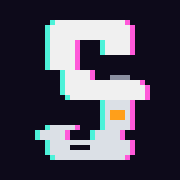
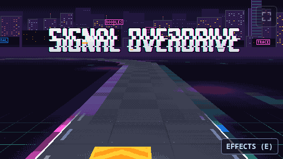
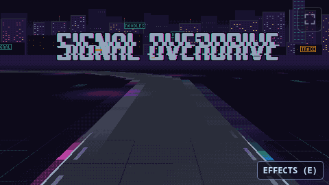
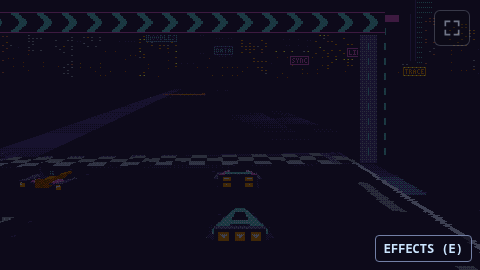
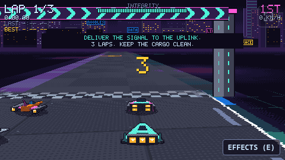

Signal Overdrive: the logo (CORRUPT)
Sources at 45b822623b75. Every letter and every mark is drawn by hand as text, one character a pixel (the sources); scripts/art/gen-logo.mjs lays them out and shades them in the game's palette through the same 4x4 Bayer matrix as its post pass. No image generation and no fonts. Each image is shown at whole multiples of its size, nearest neighbour.
CORRUPT
The cargo's integrity failing: tall condensed letters, their channels split cyan and magenta, one slice torn sideways, ICE amber and dropouts where the data broke. On the title the signal holds for a bar, then glitches hard on the downbeat and snaps back.
The site's wordmark, glitching as it will on signaloverdrive.net
These run the exported files in site/ exactly as the site will embed them (EMBED.txt): the still logo.png in an img, and logo-glitch.js stepping it through eight glitch frames on a timeline (about two seconds still, a tenth of a second glitching). With JS off or prefers-reduced-motion the still stays. Also there: og.png, the 1200x630 social preview.


Wordmark at 1x
1x is the size in the game's 480x270 frame; the site would use 2x or more. Dark ground is the game's own #0D0A1A.
CORRUPT
Wordmark at 2x
CORRUPT
Wordmark at 4x
CORRUPT
Mark at 16, 32 and 180 px
16 and 32 are separate drawings; 180 (the phone's home screen icon) is the 32 drawing on a 36 px tile at 5x. These are CSS pixels, so on a 2x display each is drawn twice as large again; the tab below picks the 16 or the 32 drawing the way a browser does.
CORRUPT


In a browser tab
CORRUPT
The title screen, in the game
Play it (the web build hosted beside this sheet). The camera wanders the track by itself while the logo glitches on the beat and the prompt asks for a start; a start (Enter, Space, a pad's Start or A, a tap) fades out, begins the race's countdown and fades back in. These are captures of that build in headless Chrome, at 2x; the logo in the first is the atlas's frame pixel for pixel.




The title animation, as the script renders it
gen-logo.mjs's own render of the loop, two bars at 140 BPM (the tempo of Carrier), over a frame captured before the effects pass. The game picks its frames from the same timing.